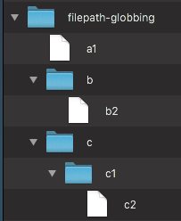

les fichiers¶
lire et écrire un fichier est très facile en Python
ouvrir un fichier pour créer un objet “fichier”
open('mon_fichier.txt', 'r')'r'ouvre le fichier en lecture (défaut),‘w’en écriture,‘a’en écriture à la suite (append),
utilisez un with¶
prenez l’habitude de toujours utiliser un context manager
# on n'a pas encore étudié l'instruction with
# mais je vous conseille de toujours procéder comme ceci
# avec with on n'a pas besoin de fermer le fichier
with open('temporaire.txt', 'w') as f:
for i in 10, 20, 30:
f.write(f'{i} {i**2}\n')
# on triche un peu pour regarder le contenu
# du fichier qu'on vient de créer
!cat temporaire.txt
10 100
20 400
30 900
lecture avec for¶
l’objet fichier est un itérable lui-même
on peut faire un
fordessusattention toutefois, les lignes vont contenir un caractère
"\n"de fin de ligne
# lire un fichier texte
# ligne par ligne
# difficile de faire
# plus compact et lisible !
# remarquez aussi:
# open() sans le mode ⇔ open('r')
with open('temporaire.txt') as f:
for line in f:
print(f"-- {line}", end='')
-- 10 100
-- 20 400
-- 30 900
# si on ne fait rien
# on obtient 2 fins de ligne
# (i.e. une ligne blanche)
with open('temporaire.txt') as f:
for line in f:
print(f"-- {line}")
-- 10 100
-- 20 400
-- 30 900
Précision
print(...)ajoute une fin de ligneprint(..., end="")évite cet ajout automatique
fichiers texte ou binaire¶
parfois utile d’ouvrir un fichier en binaire
par ex. un exécutable, un fichier dans un format propriétaireajouter
'b'au mode pour ouvrir en binairepas de décodage
travaille alors à base de
byteset non destr
# on part d'une chaine avec des accents
text = "noël en été\n"
# rappelez vous la section sur Unicode
# j'ai besoin d'un objet bytes
# j'encode mon str en un bytes
binaire = text.encode(encoding="utf-8")
binaire
b'no\xc3\xabl en \xc3\xa9t\xc3\xa9\n'
# remarquez le 'b' dans le mode d'ouverture
with open('temporaire.bin', 'wb') as out_file:
# je peux du coup écrire un objet bytes
out_file.write(binaire)
!cat temporaire.bin
noël en été
# pareil en lecture, le mode avec un 'b'
# va faire que read() retourne un objet bytes
with open('temporaire.bin', 'rb') as in_file:
binaire2 = in_file.read()
# et donc on retombe bien sur nos pieds
binaire2 == binaire
True
# on aurait pu aussi bien faire
with open('temporaire.bin') as feed:
text2 = feed.read()
text2 == text
True
le module pathlib¶
objectifs¶
simplifier la gestion des noms de fichier
pour rendre le code plus concis
et donc plus lisible
sous-titre: object-oriented filesystem paths
capable de
ouvrir les fichiers
savoir si le fichier existe, si c’est un dossier…
accéder aux métadata (taille, date)
parcourir un dossier par pattern-matching
…
un exemple¶
# savoir si un chemin correspond à un dossier
from pathlib import Path
tmp = Path("temporaire.txt")
if tmp.is_file():
print("c'est un fichier")
c'est un fichier
# donc on peut l'ouvrir
with tmp.open() as feed:
for line in feed:
print(line, end="")
10 100
20 400
30 900
construire un objet Path¶
# un chemin absolu
prefix = Path("/etc")
# le chemin absolu du directory courant
dot = Path.cwd()
# ou du homedir
home = Path.home()
# un nom de ficher
filename = Path("apache")
# par exemple le répertoire courant est
dot
PosixPath('/home/runner/work/python-advanced/python-advanced/notebooks')
l’opérateur /¶
un exemple intéressant de surcharge d’opérateur - ici /
selon le type de ses opérandes, / fait .. ce qu’il faut
par exemple ici on ne fait pas une division !
# Path / Path -> Path bien sûr
type(prefix / filename)
pathlib.PosixPath
# Path / str -> Path
type(prefix / "apache2")
pathlib.PosixPath
# str / Path -> Path
type("/etc" / Path("apache2"))
pathlib.PosixPath
# mais bien sûr str / str -> TypeError
try:
"/etc" / "apache2"
except Exception as e:
print("OOPS", e)
OOPS unsupported operand type(s) for /: 'str' and 'str'
calculs sur les chemins¶
j’ai créé un petite hiérarchie de fichiers dans un dossier filepath-globbing qui ressemble à ceci

# voilà comment on peut d'abord trouver son chemin absolu
globbing = Path("filepath-globbing")
absolute = globbing.absolute()
absolute
PosixPath('/home/runner/work/python-advanced/python-advanced/notebooks/filepath-globbing')
# si on a besoin d'un str, comme toujours il suffit de faire
str(absolute)
'/home/runner/work/python-advanced/python-advanced/notebooks/filepath-globbing'
# les différents morceaux de ce chemin absolu
absolute.parts
('/',
'home',
'runner',
'work',
'python-advanced',
'python-advanced',
'notebooks',
'filepath-globbing')
# juste le nom du fichier, sans le chemin
absolute.name
'filepath-globbing'
# le chemin, sans le nom du fichier
absolute.parent
PosixPath('/home/runner/work/python-advanced/python-advanced/notebooks')
# tous les dossiers parent
list(absolute.parents)
[PosixPath('/home/runner/work/python-advanced/python-advanced/notebooks'),
PosixPath('/home/runner/work/python-advanced/python-advanced'),
PosixPath('/home/runner/work/python-advanced'),
PosixPath('/home/runner/work'),
PosixPath('/home/runner'),
PosixPath('/home'),
PosixPath('/')]
pattern-matching¶
# est-ce que le nom de mon objet Path
# a une certaine forme ?
absolute.match("**/notebooks/*")
True
absolute.match("**/*globbing*")
True
pattern-matching - suite¶
recherche dans un répertoire
# un répertoire qui contient quelques fichiers
!ls filepath-globbing/**
filepath-globbing/a1
filepath-globbing/b:
b2
filepath-globbing/c:
c1
# à présent c'est plus intéressant
# avec des chemins relatifs
globbing = Path("filepath-globbing")
list(globbing.glob("*"))
[PosixPath('filepath-globbing/c'),
PosixPath('filepath-globbing/b'),
PosixPath('filepath-globbing/a1')]
list(globbing.glob("*[0-9]"))
[PosixPath('filepath-globbing/a1')]
list(globbing.glob("**"))
[PosixPath('filepath-globbing'),
PosixPath('filepath-globbing/c'),
PosixPath('filepath-globbing/c/c1'),
PosixPath('filepath-globbing/b')]
list(globbing.glob("**/*[0-9]"))
[PosixPath('filepath-globbing/a1'),
PosixPath('filepath-globbing/c/c1'),
PosixPath('filepath-globbing/c/c1/c2'),
PosixPath('filepath-globbing/b/b2')]
str(globbing)
'filepath-globbing'